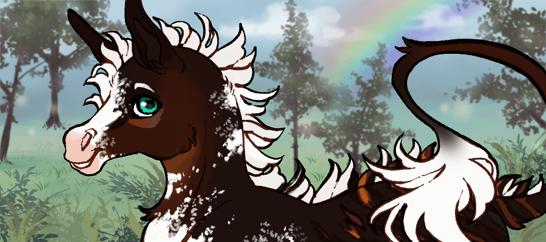

Special thanks to funnyfarm96, Nellas, and Scarlip

 Some excerpts from Goose's journal, which he's had since foalhood.
Some excerpts from Goose's journal, which he's had since foalhood.
1st Spring - 2nd Lunar cycle
Entry 1The puddle jumpers are squawking now. It's quite loud and I don't care for it. Mother says they are frog and thats its a corus....choreus....Chorus? That it is the song of the season or something. They are too fast to catch I have tried. And there is too many of them to make be quiet. I keep asking but none listen. It's hard to sleep
1st Summer - 1st Lunar cycle
Entry 1There are other babies around now. I am older than them and am quite proud. There are things that walk like us but have no mane and stubby tails. The foals have spots on them….how silly. Mama says they shouldnt be here that the human brought them and it makes sharing food in the drought season hard.
Entry 2There are these small beings of floof. The size of my hoof. They make sounds like me and are really cute. I like to be by them and nuzzle the floof upon them. Their mother is quite terrifying and has chased and pinched me. I do not like her. Mama said I should not touch other beings' babies, that it isn't safe…….but they are floofs and I want to.
Entry 3The Mama Goose, apparently, the being of terror shares a name with me, chased me again to being by the little floofs. I fled for my life, as she pinches quite hard. I had marks last time and it lasted a long time. I dont know why she has to have my name as well, I dont like her.
Entry 4Nana took me berry picking today! She showed me where all the yummiest ones are and how to tell if they are ripe or not. I especially liked the raspberries! One day I’ll learn all of the berries! But there’s so many… Apparently there’s also berries called blueberry, strawberry, and cloudberry. Isn’t that funny that some of my family has similar names? Anyways, it was really special to get to spend one-on-one time with Nana. I hope I get to do that more!
Entry 5I saw kangaroos today. Father said to not get too close to them, but they were so cute! I saw the baby peeking out from its mother’s pouch! I kinda wish I was a kangaroo… that looks so comfy. But if I was, Father said my name would have to be Joey. I like being Goose!
2nd Spring - 3rd Lunar cycle
Entry 1PawPaw sent me to go help Auntie Fae. Something about moving or organizing her things. Doesnt seem like a big deal, moving a few items to a new spot. She mentioned her new spot has a better view than the one before. Im excited to see this so called famous view.
Entry 2Turns out Auntie Fae has a lot of things.......more than I can count. They shine brightly in the sun and are in all kinds of colors and shapes. They don't look like anything I have ever seen before. She says they are trinkets and will be worth a pretty penny in the future. I don't know what a penny is.......a human thing I think. Are her things, human things too? I didn't even think to ask. Maybe next time I see her I'll ask her if they are, and what investing means. She knows too many fancy words.
The view she mentioned was worth it. You can see the expansive landscape below, and the sunsets to make it all a golden hue. I could stare at it until the night covers us in black and the stars wink at us in delight.
3rd Fall - 1st Lunar cycle
Entry 1Got stuck watching the twins. Blew and Due? No wait… Boo and Doo! Blue and Dew! Spent the whole time hiding from those two… how can you be so small but so fast? And loud!! And scary… They look so cute but then BOOM! Chaos. Blue No Dew? Keeps chomping on my tail… is she really a foal or a crocodile?! And her brother won’t stop head butting me! Never babysitting again because these babies WILL NOT SIT!
4th Spring - 2nd Lunar cycle
Entry 1I have a new little brother and he is as cute as can be! Born early in the season too. The family its calling him Pigeon. Silly little guys wants to be a bird when he grows up. None of us have the heart to tell him it isnt possible yet.
4th Summer - 1st Lunar cycle
Entry 1Pigeon is getting so tall now! Ive been tasked with keeping an eye on him and my two cousins, Dew and Blue. They are Yearlings now so I don’t think it’ll be too hard. Keep Pidge close and the twins can play in the field.
Entry 2I was wrong, Pidge cried as soon as Papa left for the day. PawPaw only seemed to laugh and encourage the twins through it all instead of help me. He mentioned its a learning experience and all in good fun. I wasn't having fun………one of them bit me and I dont even know which one did it in the chaos of it all.
5th Fall - 3rd Lunar cycle
Entry 1I travelled to up into the higher Elevations today. Away from the foothills where the herd resides. Papa told me to be careful and that he worries. He doesnt get the same itch I do to go farther, to see what is out there. I must get it from Mama. We haven't seen her in a while, and she is missed dearly. I told Papa I'd be back by nightfall to tuck the littles in for the night.
Entry 2There are many quids up in at these heights. So many new faces to greet. I'm so excited and trying to keep track of all the information. A few of the other young stallions snickered when I stumbled up the steeper grounds, and caught my hoof on the rocky soils that shift beneath my feet. It was incredibly embarassing. All the mares are watching as well, and I'm less than graceful up here on the slopes.
6th Spring - 2nd Lunar cycle
Entry 1Mama was back this winter and into spring. She’ll stay for a while since I have a new brother. Heh, I got to name him this time and after my first true travels last Summer, where I saw the human towns and the busy they bring to the lands. We call him Space after a weird thing I found that the humans call a “Blackberry”. I dont think they are very smart cause its not a berry at all and one can not eat it, it is very hard.
6th Spring - 4th Lunar cycle
Entry 1Space didnt stick like I hoped and we now call him Del after one of the other label found on the mysterious “blackberry”. Heh, humans are still so funny. I hope to depart soon on another adventure but it is awfully hard to part ways with such a cute addition in the family.
7th Spring - 3rd Lunar cycle
Entry 1A song about me from the road, thanks to a friendly Kooka"bard"a. Had to write it down!
"There once was a quid named Goose,
Who just wanted to break loose.
Go on an adventure
And make some new friends there,
But worn out he lay down to snooze.
He dreamt of a goose named Quid,
Who was known for his big wit.
A sage in a disguise,
He was so old and wise,
He’d seen it all and lived through it.
The two stood still face to face,
With neither keen on a chase.
But the gander did sense
That this quid was so tense,
Not truly at home in this place.
'So listen,' the old one spoke,
'You seem like a decent bloke.
But your vibe don’t seem right,
Your eyes carry no light,
You seem to be missing your folk.'
'I know you’re scared of attack,
To find you’re not welcome back.
But let me just tell ya
That you’re not a failure,
The longing for home does
Catch up with the sailor.
And birds of a feather
Should all flock together,
So long as the barbs stick
The quill braves the weather.
So maybe it’s time to connect.'
These words still fresh, Goose arose
And dashed until home was close.
Adventures on his mind,
Stories one of a kind,
To tell anytime that he chose."
Food for thought, that old bird had. I'll have to visit my folks, soon.
7th Fall - 1st Lunar cycle
Entry 1I've been gone for quite some time, with so many adventures I still need to write about. I'm nearing the foothill where I was born. The annual picnic is fast approaching and I hope to make it back on time. I havent gotten a dish to bring yet but I’ll see what I can find on the way. Lucky stars be crossed!